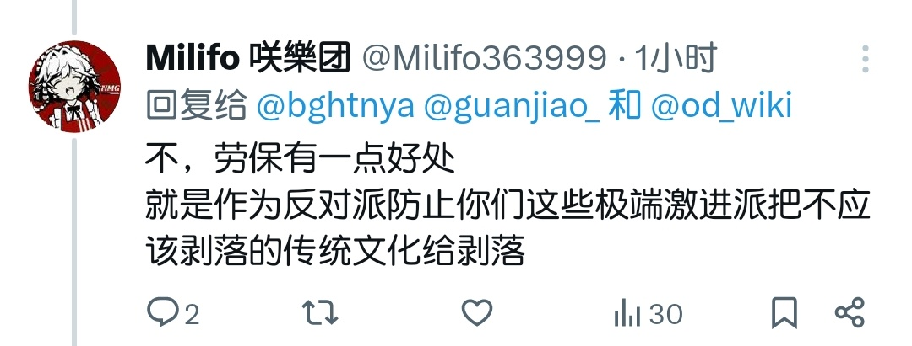

冰棍好烫喵 🍥ヘ(≧∇≦)
@bghtnya
@Milifo363999 @guanjiao_ @od_wiki 《》

Milifo 咲樂团
@Milifo363999
@bghtnya @guanjiao_ @od_wiki “把你们这些极端保守派～”
是你说的话吧。是你先设的论题吧。
而且看出来你似乎并没有读过《竞选州长》这篇经典文章，复制文章时甚至改成了竞选主席，好笑
早该废除的文化，女人缠小脚，不上桌，对官员自称奴才等糟粕
谁在意淫
和你讲道理你三言两语语焉不详，涉及到攻击了精神抖擞，复制黏贴
笑 https://t.co/6WdIgS9HhK